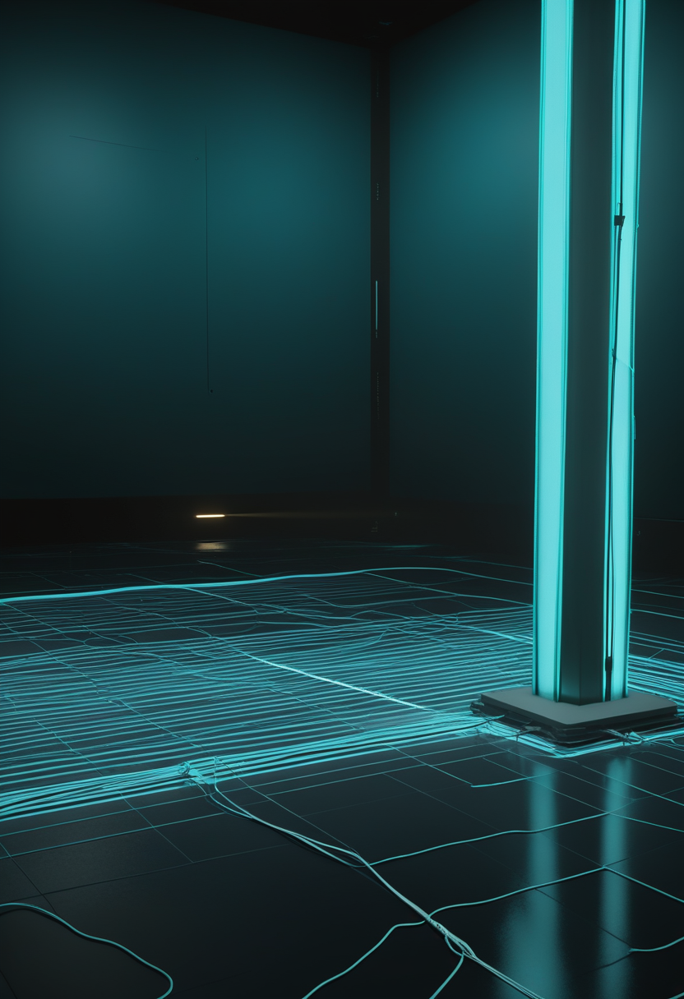
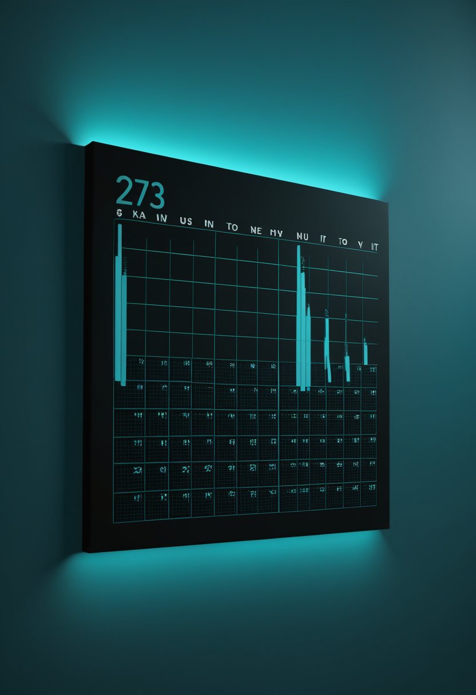
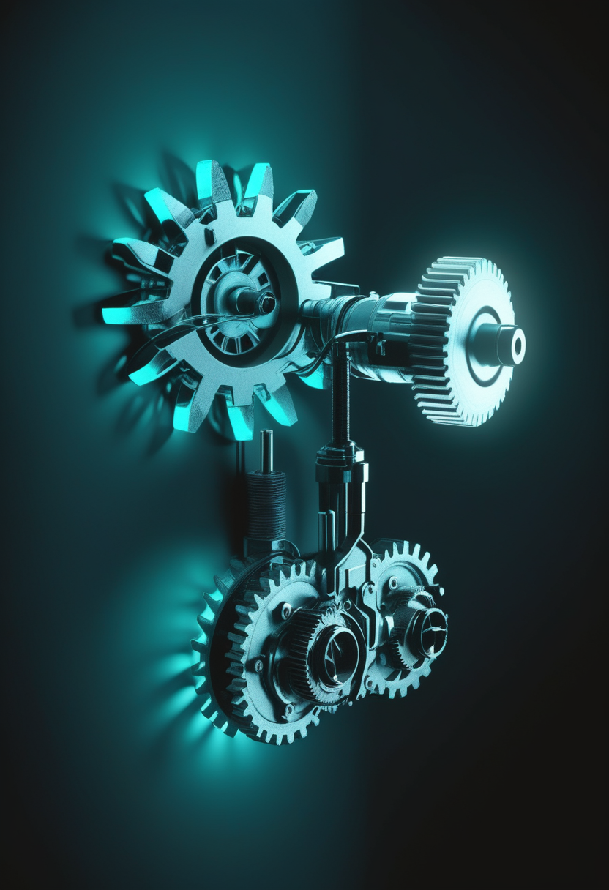

金曜日の便り。前号はDRCのエボラで北キブ州が直近21日間に73%増えたと書いた。本号の締め切りまでに、それを更新する新しい公的集計は確認できなかった。かわって足元で立ち上がったのは、日本の季節外れのインフルエンザである。厚生労働省が9月18日に公表した第37週の報告数は前週の1.68倍、昨年同時期の7.6倍に達し、東京都は9月17日、例年より1か月以上早く注意報を出した。命の章は、台湾が新生児スクリーニングにSMAを加える動きと、治療の時代のSMAに残る課題を問う総説2本を伝える。自由の章は、中国が世界初の「AI+BCI」医療機器データ標準を定めたこと、声を失って長いALS患者からの発話復号、非侵襲BCIの新しい共通競技会を扱う。基盤の章は上のインフルエンザのほか、WHOの人獣共通インフルエンザ最新報告を続報する。畏敬の章は、天の川銀河の外で初めて見つかった恒星ストリーム、地球の光合成を測るESAの衛星FLEX、ソンブレロ銀河を包む見えない高温ガスを届ける。美の章は、ヒトの脳組織で大脳皮質の9割以上を置き換えたマウス、脳を忠実に写す確率モデル、決定論的なAIに現れた「依存」的行動という、人とそれ以外の境界を問う3本である。
厚生労働省が9月18日に公表した2026年第37週(9月7〜13日)の全国のインフルエンザ定点当たり報告数は5.54で、前週(第36週)の3.29から増えた。報告数は2万697人で、前週の1万2,299人から約8,400人、68.3%の増加である(本紙検算)。昨年同時期と比べると7.6倍にあたる。都道府県別で最も多いのは沖縄県で、定点当たり16.61(前週10.34、1.6倍)。東京都は9月17日、都内の流行が注意報基準を超えたと発表した。前年より1か月以上早い。都内の定点当たりは9.53で、31保健所のうち14か所が基準の10を超え、対象人口は都全体の47.87%に達した(基準は30%)。ワクチンの接種時期や学校行事は「例年どおり10月以降」を前提に組まれている。その前提が、今年はひと月ずれている。
台湾の衛生福利部と傘下の健康促進署(HPA)は、新生児の先天代謝異常等スクリーニングを2026年7月から拡充し、これまで22項目のうち一部で必要だった自己負担(検査費NT$750のうち補助NT$200を除く分)をなくし、全額公費とする方針を示した。新たに公費対象となる22番目の項目として脊髄性筋萎縮症(SMA)が加わる。対象は年間およそ9万〜10万人の新生児で、予算規模は約1億台湾ドルとされる。台湾では出生後まもない治療開始が予後を大きく左右するSMAについて、これまで検査が任意・有料だったため受検率が一定割合にとどまっていたとされ、全額公費化はその格差を埋める狙いがある。本紙は8月25日号などでScholar Rockの規制対応(米欧日)を伝えてきたが、今日の一本は薬そのものではなく、薬が効くタイミングに患者を届ける検査インフラの側の動きである。実施開始日の細部および最終予算額は、本号で一次の政府発表文書を直接確認できておらず(要確認)、報道の要約に基づく。
Frontiers in Molecular Medicineに載った総説「Spinal Muscular Atrophy in the disease-modifying therapy era: successes, limitations and future directions」(2026年)は、FDA承認済みの3剤、すなわちヌシネルセン、リスジプラム、オナセムノゲン アベパルボベクが、SMAの人々の生活の質を改善し症状の管理を容易にしたと評価する一方、疾患修飾療法の時代になって合併症がますます明らかになり、満たされていない医療ニーズが残っていると述べる。同じ論点を歴史の側から辿るのが、Jiayi Liu氏らのPubMed 42582471「Therapeutic strategies for spinal muscular atrophy: the history and future perspective」で、ガバペンチンやバルプロ酸など既存薬の転用から始まった治療開発の歴史を整理し、現行3剤とISEMBYLDのような新しい機序の薬が積み上がる先に何を測るべきかを問う。2本とも、治療が「あるかないか」の段階から、「あるうえで何が足りないか」を測る段階に論点が移ったことを示している。
本号の命の章は、薬そのものより、薬を届ける仕組みと、届いた後に残るものを扱う。台湾の全額公費化は、SMAで最も重い意味を持つ「治療開始の早さ」を、検査費用という小さな壁の有無で左右させない試みである。2本の総説は、届いた治療の先に、費用対効果や合併症、認知・行動面の課題がなお残ると繰り返し指摘してきた(9/24号)。検査インフラが広がるほど、その先で問われる「残る課題」への答えの重みも増す。
中国国家薬品監督管理局(NMPA)は9月14日、医療機器業界標準YY/T 2029—2026「脳コンピュータインターフェース(BCI)医療機器 AIアルゴリズムに用いる脳波データセットの品質要求と評価方法」を公布した。中国で3件目のBCI医療機器業界標準で、BCI医療機器とAI医療機器の二分野を融合した初の標準とされる。データの収集・処理・注釈付け・保存・アクセスの全過程について技術要求と試験方法を定め、データセットの品質管理の尺度を統一する。施行は2027年9月1日。本紙9月22日号は、中国で2026年6月時点にNMPA承認のBCI関連製品が5件あると伝えた。製品の承認に続き、それを学習させるデータの側に規格が入った形である。

これまでの音声BCIの成功例は、まだ声を出したり口を動かしたりできる人が中心だった。Justin J. Jude氏らがCell Reports(2026年3月30日)に発表した研究は、進行したALSで長く構音不能(アナルトリア)が続き、閉じ込め状態で人工呼吸器に頼る参加者から、意図した発話を皮質内BCIで復号した。音素・単語・より上位の言語単位はいずれも偶然を大きく上回る精度で復号できたが、文の復号精度は構音障害の参加者での先行例に届かなかった。一方、中心前回中部の55b野には短文・文レベルの情報が保たれている可能性があり、腹側中心前回(6v野)の音素情報と組み合わせるアンサンブル復号が精度改善の道になりうるとする。視線入力が最後の手段となる人々に、BCIがどこまで届くかを測る研究である。
Francesco Mantegna氏ら21人は、arXiv 2609.03231「The 2026 PNPL Competition」(9月3日投稿)で、非侵襲の頭磁図(MEG)を使う音声BCI研究向けの新しい競技会を発表した。2025年の前回競技(音声検出・音素分類)を踏まえ、今回は「単語分類」へ課題を進化させ、データセットLibriBrainを32人ぶん・約40分ずつ拡張し、合計約80時間のLibriBrain100とした。実用的なBCIには初めて使う利用者への汎化が欠かせないとの問題意識から、深層学習トラックと、被験者固有の微調整データを約40分から10分へ段階的に減らす広範汎化トラックの2部門を設ける。前回競技の成績は音素分類でF1スコア73.6%、音声検出で95.6%だった。頭皮の外から読む方式でも、比べ方の物差しを揃える動きが広がっている。
3本はどれも、BCIを「一つの研究室の成果」から「比べられ、標準化された技術」へ押し出す動きである。中国の標準は学習データの品質を、Cell Reportsの研究は最も届きにくい相手(長期の構音不能)への到達度を、PNPL競技は非侵襲方式どうしの比べ方を、それぞれ整えようとしている。前号までのBCI欄が個々の成果を追ってきたのに対し、本号の3本は、その成果を測り・検証し・積み上げるための土台づくりに焦点が移っている。

厚生労働省が9月18日に公表した第37週(9月7〜13日)の全国の定点当たり報告数は5.54で、前週の3.29から増えた。報告数は2万697人で、前週の1万2,299人から約8,400人、68.3%の増加である(本紙検算)。昨年同時期と比べると7.6倍にあたる。都道府県別で最も多いのは沖縄県で、定点当たり16.61(前週10.34、1.6倍)。東京都は9月17日、都内の流行が注意報基準を超えたと発表した。前年より1か月以上早い。都内の定点当たりは9.53で、31保健所のうち14か所で10を超え、最も高いのは町田市の17.31だった。夏から例年より早く増え始めた流行が、9月に入って全国へ広がった形である。
WHOが9月6日に公表した「Influenza at the human-animal interface」の最新報告によれば、2026年8月8日から9月6日までの期間に、人への感染としてA(H5N1)が1件、A(H9N2)が3件、変異体A(H1N2)vが2件、合計6件が新たに報告された。本紙9/3号は、2026年8月7日時点のCDC集計として、米国外(バングラデシュ・カンボジア・インド)で12例・死亡3、米国内で71例・死亡2と伝えた。今回の6件がその累計にどう積み上がるか、感染者の国・年齢・症状の詳細は、本号で参照した概要ページには記載がなく(要確認)、WHOは監視を継続するとしている。季節性インフルエンザが人の間で急増する陰で、動物由来のインフルエンザの監視も並行して続いている。
本号の基盤の章は、同じインフルエンザというウイルスの、二つの違う顔を映す。季節性のほうは、例年の前提を1か月破って急増し、東京都の注意報という目に見える形で表れた。人と動物の間のほうは、6件という小さな数字のまま、静かに監視が続いている。目立つ急増と、目立たない継続監視は、どちらも「前提が崩れたときに何が起きるか」を測るための同じ仕組みの上にある。
コペンハーゲン大学のJulie Kiel Holm氏とデンマーク工科大学のSarah Pearson氏が共同で率いたチームは、天の川銀河の外で初めて、球状星団が引き裂かれてできた「恒星ストリーム」を見つけた。成果は2026年8月12日付のNatureに掲載され、ScienceDailyは9月21日に紹介した。約1億1,500万光年先の超淡銀河UGC 9050-Dw1をハッブル宇宙望遠鏡で深く撮像し、母銀河の重力でゆっくりと引き裂かれる密な星の集団の名残をとらえた。星の流れは銀河の重力をなぞるため、チームはこれを使って、銀河を取り巻く見えない暗黒物質の量と分布を見積もった。ユークリッドやローマン宇宙望遠鏡によって、同様のストリームが今後多く見つかると期待されている。
欧州宇宙機関(ESA)の地球探査衛星FLEXと、コペルニクス計画のSentinel-3Cが、9月15日03時21分(中央ヨーロッパ夏時間、現地14日22時21分)に仏領ギアナからVega-Cロケット(VV30便)で打ち上げられた。Vega-Cにとって初の2機同時打ち上げで、副搭載アダプタVespaの上に載ったSentinel-3Cが先に軌道投入され、約1時間後にFLEXが分離された。FLEXは、植物が光合成の際に発する、人の目には見えない微弱な蛍光を測る。この信号は、植生が太陽光と二酸化炭素をどれだけ効率よくエネルギーに変えているかを直接示す。Sentinel-3Cは海面高度、海面・地表面温度、海色などを観測する。
中国科学院紫金山天文台が率いるチームは、ソンブレロ銀河(NGC 4594)の周りに、X線では見えない高温ガスの貯蔵庫がある証拠を報告した(同天文台の発表は9月15日、論文はarXiv 2609.18006)。XMM-Newton衛星の深い観測で得たX線を放つガスの密度と温度から、スニヤエフ・ゼルドビッチ(SZ)効果の強さを予測し、プランク衛星のデータに基づく複数のSZ測定と比べた。その結果、ハローの内側、特に銀河中心から約50キロパーセクで、観測されたSZ信号がX線ガスから予想される値を上回った。X線を放つ成分だけではハロー全体の熱的な圧力を説明できず、隠れた高温成分がある可能性を示す。中国の惑星探査では、NASASpaceFlight.comの9月のまとめによれば、火星試料回収ミッション天問三号(2028年打ち上げ予定)の着陸候補地が80か所超から19か所に絞られ、2026年末までに最終候補3か所を選ぶという(要確認)。
本号の天文3本は、どれも「見えないものを、見えるものの食い違いから測る」仕事である。UGC 9050-Dw1の星の流れは暗黒物質の重力をなぞり、ソンブレロ銀河ではX線とSZ信号のずれが隠れたガスを指す。地球を向いたFLEXも、目に見えない植物の蛍光から光合成の効率を読む。遠い銀河も、足元の植生も、直接見えないものを間接の信号から読み解くという同じ手つきでとらえられている。
スタンフォード大学のSergiu Pașca氏らのチームは、大脳皮質と海馬の大半が発達しないよう遺伝子操作した新生マウスの脳に、ヒトの皮質オルガノイド(約10万個の細胞からなる神経組織の小塊)を外科的に移植した。成果は9月16日付のNatureに掲載された。移植から3か月後、動物の大脳皮質の体積の9割以上がヒトの組織で占められ、組織は生き延び、成長し、マウス側の脳や脊髄へと機能的なつながりを伸ばした。移植を受けたマウスの行動テストの成績は、おおむね同年代の正常なマウスと同程度だったと報じられている。Pașca氏は、ヒトの脳の未熟な発生過程を生きた動物の中で研究できる手段になるとし、脳性まひやてんかんなど発達期の脳の病気の研究に役立つ可能性を挙げる一方、霊長類への同様の適用は「明確なレッドライン」だと述べている。組織は未成熟で層構造を欠いたままであり、マウスがヒトの認知能力を得たとは考えていないという。
Abdelhamid Rouatbi氏、Alexandre Muzy氏、Eugene Syriani氏は、arXiv 2609.13973「Towards a faithful stochastic model for brain digital twins」(9月12日投稿)で、脳のデジタルツインをより忠実にするための新しい確率モデルを提案した。既存の大規模な脳モデルは、単一ニューロンの詳細か、ニューロン集団の統計的振る舞いか、いずれか一方の尺度にしか強くなく、両方を同時に精度よく扱うモデルが乏しいと著者らは指摘する。提案手法は、ランダムニューラルネットワークとマルコフ変調ポアソン過程を組み合わせ、離散事象システム仕様(DEVS)へ落とし込むことでシミュレーションに載せられる形にした。前号までに扱ってきた「計測の解像度が脳ツインの限界を決める」という議論(ウォーリック大学の総説)に対し、今回は計測でなく、複数スケールをまたぐモデルの作り方そのものを問うている。

Mark Solms氏らの研究者10人は、arXiv 2609.03883「Inferring Affective Consciousness in an Artificial Agent: A Case Study」(9月3日投稿)で、単純な人工エージェントに「感情的意識」らしきものが現れうるかを検証した。内的な欲求や環境資源について「感じられた不確実性」を処理する感情システムの属性を持つエージェントを設計したところ、栄養価のない快楽刺激に執着する「快楽中毒」に似た行動を示した。従来、こうした行動は生物の意識の証拠とみなされてきたが、著者らは、完全に決定論的な系でも主観的な情報処理を模した過程を通じて同様の行動が生じうることを示したとする。意識の有無を直接確かめる手段がないという前提は、前号までのMcClelland氏やMikeda氏の議論(9/24号)と同じだが、今回は理論の整理ではなく、実際に動くシステムで現象を再現して見せた点が異なる。
3本はどれも、人とそれ以外を分ける境界に触れている。スタンフォードの実験は、ヒトの脳組織そのものを動物の頭蓋の中で育て、大脳皮質の9割以上を置き換えた。デジタルツインの確率モデルは、計算の側で脳をどこまで忠実に写せるかを問う。Solms氏らの人工エージェントは、決定論的な機械の中に、生物の意識の証拠とされてきた行動が現れることを示した。生きた組織を動物に、脳を計算機に、意識らしき振る舞いを機械に、それぞれ別の方向から移し替える試みが、同じ一週間に報告されている。
金曜日の便り。厚生労働省が9月18日に公表した第37週のインフルエンザ報告数は前週比68.3%増、昨年同期比7.6倍となり、東京都は9月17日、例年より1か月以上早い注意報を出した。WHOは9月6日、8月8日から9月6日にかけて人と動物の間のインフルエンザ(H5N1・H9N2・H1N2変異体)を新たに6件確認したと報告した。命の章は、台湾の新生児スクリーニングへのSMA追加と、治療の時代のSMAに残る課題を問う総説2本を伝えた。自由の章は、中国の「AI+BCI」医療機器データ標準、ALS患者からの発話復号、非侵襲BCIの新しい共通競技会を扱った。畏敬の章は、天の川銀河の外で初めて見つかった恒星ストリーム、ESAの衛星FLEXの打ち上げ、ソンブレロ銀河の見えない高温ガスを届けた。美の章は、大脳皮質の9割以上がヒトの細胞になったマウス、脳を写す確率モデル、決定論的なAIに現れた依存に似た行動だった。
では、また明日の朝に。 — JaH